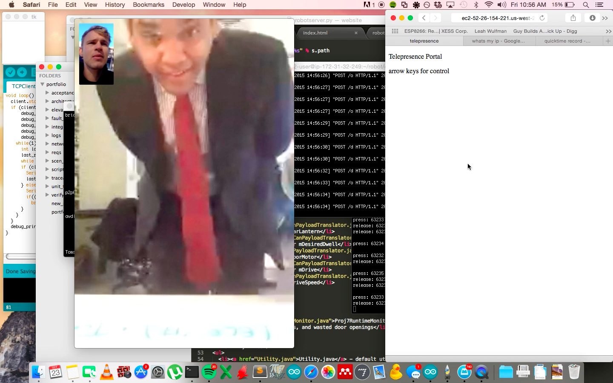

Tree of Light is a interactive touch sculpture that creates an emotional experience. A handmade touch sensor and audio and visual actuators create something that is more than the sum of it's technological parts. The project won the First Penguin award at the 2015 CMU Build18 hardware hackathon. From January-August 2015, the sculpture was installed at Alphalab Gear, a startup incubator in East Liberty, Pittsburgh.
Branches and incandescent lamps are suspended from a 7' square trellis erected 14' in the air. Notably, the entire scaffold was conceived, designed, built and erected in 2 days. The 12 incandescent bulbs are dimmed in real time using a triac switch. A microcontroller syncs to the zero crossing of AC mains and uses a timer interrupt to trigger the switch 60 times a second.
The trunk sensor stands 8' tall and is wrapped in aluminum foil. It uses swept frequency capacitive touch sensing to detect touch on the conductive surface. An RLC circuit is grounded, connected to the foil and driven with a range of sinusoids. Presence of the human body affects the frequency response of the circuit. Frequency response waveforms are classified in Processing. The sensor can differentiate between 0, 1 and 2 people touching.
Open Sound Control and ChucK are used to generate tones that respond to touch.
Now, the lights live on as dancefloor lighting. MaxMSP listens to music, filters the audio, and sends serial messages to sync the lights to the beat. The incandescent bulbs give a unique effect.
Collaborators
|
Thomas Eliot
Hannah Tomio Arun Marsten Sebrand Warren Sharina Lall |
CMU 2016 ECE
CMU 2017 ECE CMU 2016 BXA music & CS CMU 2015 Design CMU 2017 Bio |
This was the first year participating in the competition for all team members.
Installation at Alphalab Gear
Using the 3pi platform, Bob Rudolph and I built a telepresence robot. The robot allows you to have a remote physical presence almost anywhere.
Our telepresence robot is based on the Pololu 3pi platform. We’ve added an ESP8266 wireless module that acts as a TCP client to provide remote control. It connects to the 3pi via serial. The ESP8266 uses the iPhone’s cellular data connection to connect to the internet. The iPhone runs Facetime to provide remote audio and visual.
We control the robot using a server and facetime on a computer. The server is written in Python, it takes keyboard commands and sends TCP packets.
We noticed that inhabiting the robot can cause some interesting effects. Controlling the robot can give the feeling of reduced responsibility, resulting in actions that deviate from social norms. The robot lives on the floor, giving the user the perspective of a mouse. Humans and their feet become dangerous. After inhabiting the robot for more than 30 minutes continuously, I became frustrated with the helplessness I felt.
We had the chance to demonstrate our robot to President Suresh's Global Advisory Council on November 24, 2015 as part of the IDeATe open house. Unfortunately I already had plans to fly to New York at that weekend. No problem, I attended by telepresence!

In order to control the robot from New York, I had to set up a dedicated server. I used a python webapp on an EC2 instance. It serves up a Javascript page that sends arrow key input back to the server with POST commands. The telepresence robot calls into the server which returns the commands.
Future improvements could include: Changing to the form of the robot to be more playful and inviting. Controlling the robot using facial recognition. Scripting interactions
Code
Robot Control Server: robotControl.py
Note that the machine you are running the server on must have it's TCP port exposed to the internet. If your machine is on the 'CMU' (unsecured) network, this is already the case. Almost anywhere else, you need to set up port forwarding on your router. It also helps to have a static IP, so you never have to program a new server IP into the ESP8266.
ESP8266 code: TCPClient.ino
This code is for the Arduino IDE. You can install ESP8266 support in the IDE, type http://arduino.esp8266.com/stable/package_esp8266com_index.json into Additional Board Manager URLs field in the Arduino v1.6.4+ preferences. The schematic for programming the ESP8266 can be found here http://www.xess.com/blog/esp8266-reflash/. They use a different utility for programming but the schematic works.
Robot code: 3pi code
Upload using Atmel AVR studio
Schematics
Electrical schematic
Manufacturing
Chassis: Laser cut files
Made in solidworks. For 1/8" ply
Project for Physical Computing Fall 2015. Collaborators: Bob Rudolph
"A to-go coffee cup that tells you where to go"
|
Thomas Eliot
Arun Marsten Sascha Demetris Westin Lohne Chloé Desaulles Cliff |
CMU 2016 ECE
CMU 2016 BXA music & IS CMU 2016 MechE CMU 2015 BXA HCI & IS CMU 2019 BXA Art & Biology Barista at Constellation Coffee |

Long after all flora has become extinct, Lillium Candidum is a mechanical recreation of the Madonna lily. The basic components are there: six white petals, a long stalk, and leaves. Furthermore, the flower responds to the light in its environment, blooming when lit and closing up in the dark. However, much of the emotional component generally associated with flowers is lost in this mechanical creation. This flower represents our prediction that as people start to express their emotions via electronic means (texting, social media, etc), the simple, elegant beauty of lilies (and flowers in general) are neglected. In particular, lilies were usually associated with funerals, representing the restoration of innocence to the soul. Thus, we found it appropriate to choose a lily as the flower representing the “death” of flora. We hope that by observing this flower, spectators will reflect on the sincerity and genuineness of their interactions particularly in the context of using flowers to express care towards others. Project for Physical Computing Fall 2015. Collaborators: Qiaozhi (George) Wang, Ananya Rajgarhia.

Use this area of the page to describe your project. The icon above is part of a free icon set by Flat Icons. On their website, you can download their free set with 16 icons, or you can purchase the entire set with 146 icons for only $12!
{kind=link}
{kind=link}
{kind=link}
{kind=link}
{kind=link}
{kind=link}
{kind=link}
{kind=link}
{kind=link}
{kind=link}
{kind=link}
{kind=link}
{kind=link}
{kind=link}
{kind=link}
{kind=link}
{kind=link}
{kind=link}
{kind=link}
{kind=link}